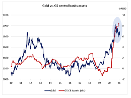
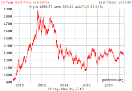

Gold is a good investment. Every parent will tell their childeren to invest in gold.The reasons for gold's importance in the modern economy centers on the fact that it has successfully preserved wealth throughout thousands of generations. The same, however, cannot be said about paper-denominated currencies.
Whether it is the tensions in the Middle East, Africa or elsewhere, it is becoming increasingly obvious that political and economic uncertainty is another reality of our modern economic environment. Why is this? Well, history is full of collapsing empires, political coups, and the collapse of currencies. During such times, investors who held gold were able to successfully protect their wealth and, in some cases, even use the commodity to escape from all of the turmoil. Consequently, whenever there are news events that hint at some type of global economic uncertainty , investors will often buy gold as a safe haven.
In general, gold is seen as a diversifying investment. It is clear that gold has historically served as an investment that can add a diversifying component to your portfolio, regardless of whether you are worried about inflation, a declining U.S. dollar, or even protecting your wealth. If your focus is simply diversification, gold is not correlated to stocks, bonds, and real estate.
Gold stocks are typically more appealing to growth investors than to income investors. Gold stocks generally rise and fall with the price of gold, but there are well-managed mining companies that are profitable even when the price of gold is down. Increases in the price of gold are often magnified in gold-stock prices. A relatively small increase in the price of gold can lead to significant gains in the best gold stocks and owners of gold stocks typically obtain a much higher return on investment (ROI) than owners of physical gold.
One of the risks involved is impurity in gold. Another problem involved with investment in physical gold is keeping it safe against the risks of theft, burglary, house breaking etc. Because of such risks, the investors need to make recurring expenses to hire lockers, buy insurance etc to ensure safety of the gold possession
Liquidy is high . You can sell any bond online. physical gold liquidy is also high .
GST on gold in various forms can be discussed at length. GST subsumed VAT, service tax, excise duty and several other indirect taxes charged on domestic transactions. Tax on the making charges on gold jewellery was introduced under GST. On the other hand, basic customs duty continues to be collected on the import of gold from other countries and the levy of IGST.
Gold, on its own, has no inherent investment return. That is, unlike a stock or a bond, it generates no cash flows in the form of profits, dividends, or interest income.
These are funds that invest in ETFs that are investing in gold Usually, the expense ratio is low and it ranges from 0.09%-0.20% as these are passively managed funds These are open-ended funds but can have an exit load of 1 percent if redeemed before 365 days. However, funds such as Nippon India Gold Savings Fund have an exit load only for the first 15 days. One should prefer funds that have lesser days in their exit load
The main benefit of purchasing digital gold is its low denomination and high liquidity. One can sell the gold whenever they would like to and the sale takes place at live market prices. Some platforms also allow for physical delivery of Gold. The investment is backed by real gold in a storage facility. Purity is also a criterion to be investigated.
The main benefit of SGB is that it is risk-free and that no management fee is charged. The main drawback of SGB is lack of liquidity due to lack of depth in the market. It pays an additional 2.5 percent interest per year which makes it the best gold investment option if one is looking to invest for long term